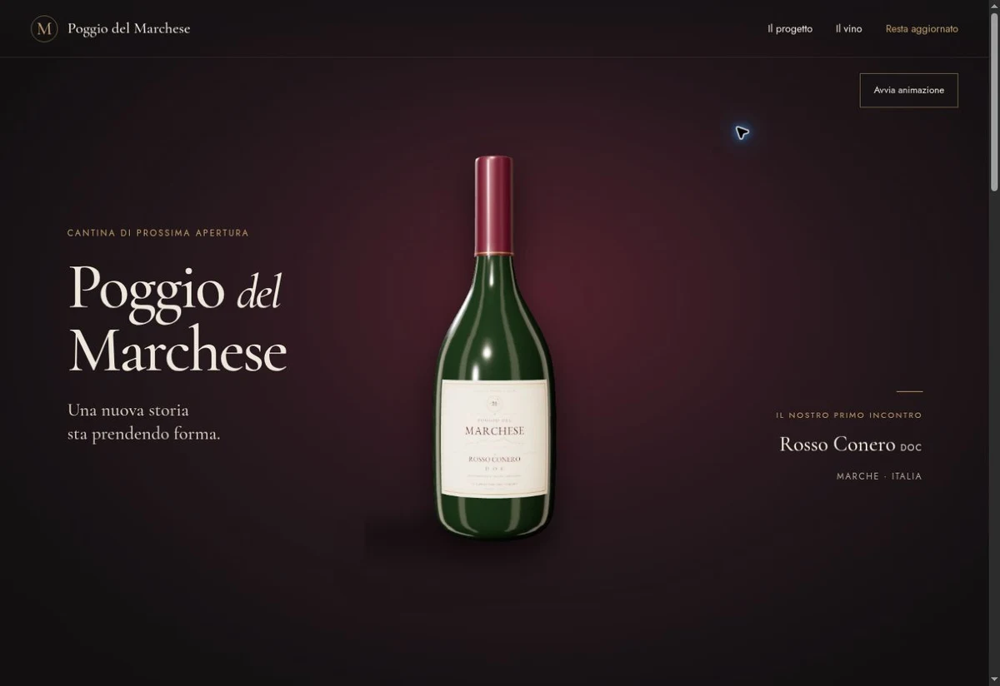

← Torna ai progetti
Poggio del Marchese
Il carattere di un vino, tradotto in esperienza digitale.
Apri la demo Il frame qui sotto apre lo stesso sito.
Schermata della vista statica. La demo include la sequenza 3D sui dispositivi compatibili.

IL PROGETTO
Un'idea.
Una direzione precisa.
Un concept narrativo per un’etichetta Rosso Conero, con uno storytelling visivo elegante e un’esperienza guidata dallo scroll.
La sfida
Comunicare identità e valore percepito attraverso un percorso web che risulti raffinato, immersivo e scorrevole.
La soluzione
Direzione artistica scura, accenti bordeaux e ottone, interazioni a scorrimento e studio per la visualizzazione tridimensionale della bottiglia.
PARTIAMO DA UN'IDEA
Mettiamo a fuoco
il tuo progetto.
Partiamo da quello che vuoi migliorare: presenza online, lavoro quotidiano o servizi ai clienti. Definiamo insieme il passo successivo.
Raccontaci il tuo progetto